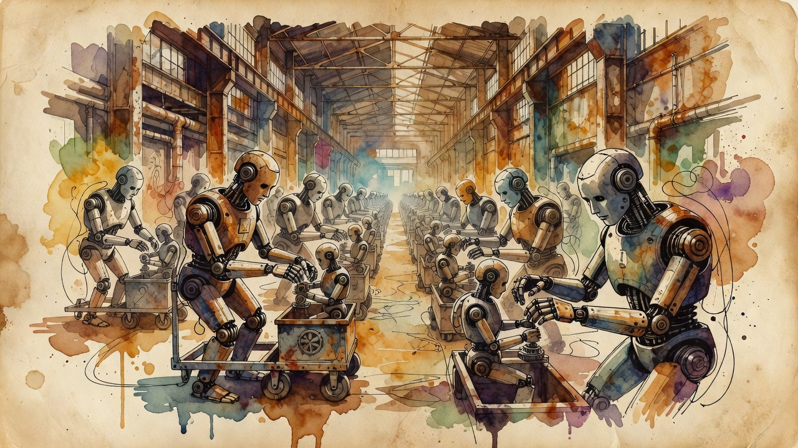

Humanoid mass production
Inside UBTECH's 10,000-unit humanoid factory: robots assembling robots in Liuzhou
UBTECH Robotics commissioned a 14,000-square-meter humanoid super factory in Liuzhou engineered to roll a completed unit off the line every 10 minutes, toward a 10,000-plus per-year run rate. The 'robots building robots' floor deploys Cruzr mobile manipulators, AGVs and autonomous forklifts on a flexible non-conveyor line, targeting sub-$20,000 unit production cost by 2030.